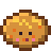
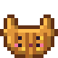
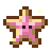
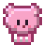
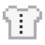
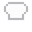

Help Baker Korstje in the Knabbelbakkerij: bake what the customers want.
Help Bakker Korstje in de Knabbelbakkerij: bak wat de klantjes willen.
De Knabbelbakkerij
A giant kaasknabbel bread with a guh face in its crust, and a chimney that puffs knabbel clouds. Bakker Korstje (he started to look like his bread himself) runs a minigame: customer guhs come in with an order bubble; pick the dough, the shape and the topping, time the oven right (not too pale, not burnt!) and serve before they get impatient. Happy customers in a row make a combo. You earn bakmunten (+1 extra per reward) for his shop, and your score goes into the highscores. With a knabbeloven of your own you bake the 12 recipes of the receptenboek (knabbelbroodje, kaaskrakeling, vadsvlaai, guhcroissant, knabbelkoekje, kaasbolletje, pluismuffin, theetaartje, knabbeltompouce, vadsdonut, guhwafel, sterrenkoekje) from knabbelgraan, kaasmelk and knabbeleitjes (wheat, milk and eggs work too, but fresh farm things give one extra).
Een reuzenkaasknabbelbrood met een guhgezicht in de korst, en een schoorsteen die knabbelwolkjes puft. Bakker Korstje (hij is zelf op zijn brood gaan lijken) heeft een minigame: klantguhs komen binnen met een bestelwolkje; kies het deeg, de vorm en het toppinkje, haal het precies op tijd uit de oven (niet te bleek, niet aangebrand!) en serveer voor ze ongeduldig worden. Blije klanten op rij geven een combo. Je verdient bakmunten (+1 extra per beloning) voor zijn winkeltje, en je score komt in de highscores. Met een eigen knabbeloven bak je de 12 recepten van het receptenboek (knabbelbroodje, kaaskrakeling, vadsvlaai, guhcroissant, knabbelkoekje, kaasbolletje, pluismuffin, theetaartje, knabbeltompouce, vadsdonut, guhwafel, sterrenkoekje) van knabbelgraan, kaasmelk en knabbeleitjes (tarwe, melk en eieren gaan ook, maar verse boerderijspullen geven er een extra).






Prizes: clothesPrijzen: kleding

Guhkoksbuis 9 bakmunten bij Bakker Korstje
Guhkoksmuts 6 bakmunten bij Bakker Korstje Bakkersmutsje 5 bakmunten bij Bakker Korstje
Bakkersmutsje 5 bakmunten bij Bakker Korstje Bakkersschortje 7 bakmunten bij Bakker Korstje
Bakkersschortje 7 bakmunten bij Bakker Korstje Meelstrikje 4 bakmunten bij Bakker Korstje
Meelstrikje 4 bakmunten bij Bakker Korstje
Highscores in the GuhdexHighscores in de Guhdex
- Knabbels bakken